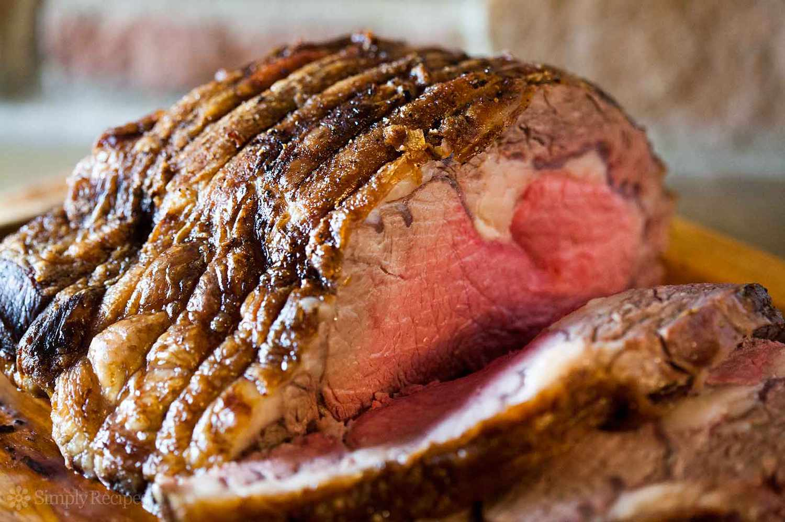

Perfect Prime Rib Recipe
Perfect Prime Rib Recipe

- 1 (4 pound) prime rib roast
- .25 cup unsalted butter, softened
- 1 tablespoon freshly ground black pepper
- 1 teaspoon herbes de Provence
- kosher salt to taste
- Place prime rib roast on a plate and bring to room temperature, 2 to 4 hours
- Preheat an oven to 500 degrees F
- Combine butter, pepper, and herbes de Provence in a bowl; mis until well blended. Spread butter mixture evenly over entire roast. Season roast generously with kosher salt
- Roast the 4-pound roast in the preheated oven for 20 minutes.
- Turn oven off and, leaving the roast int he oven with the door closed, let the roast sit in the oven for 2 hours
- Remove the roast from the oven, slice, and serve.